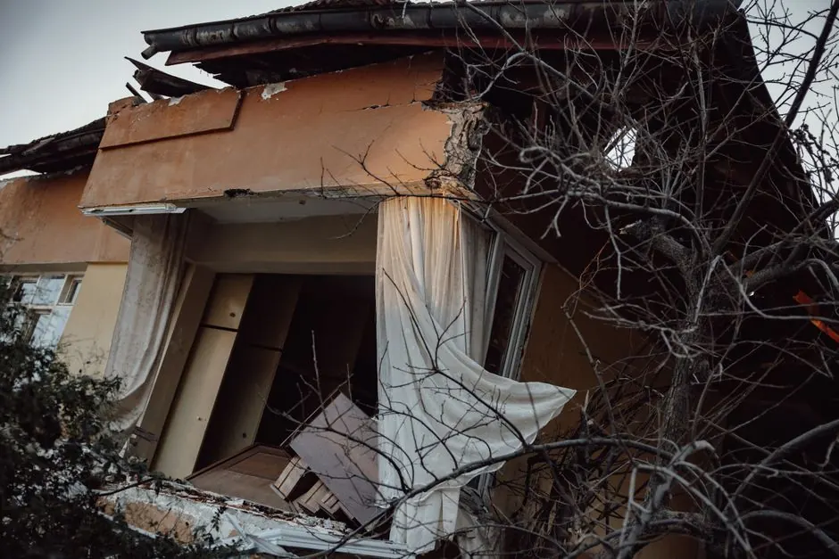
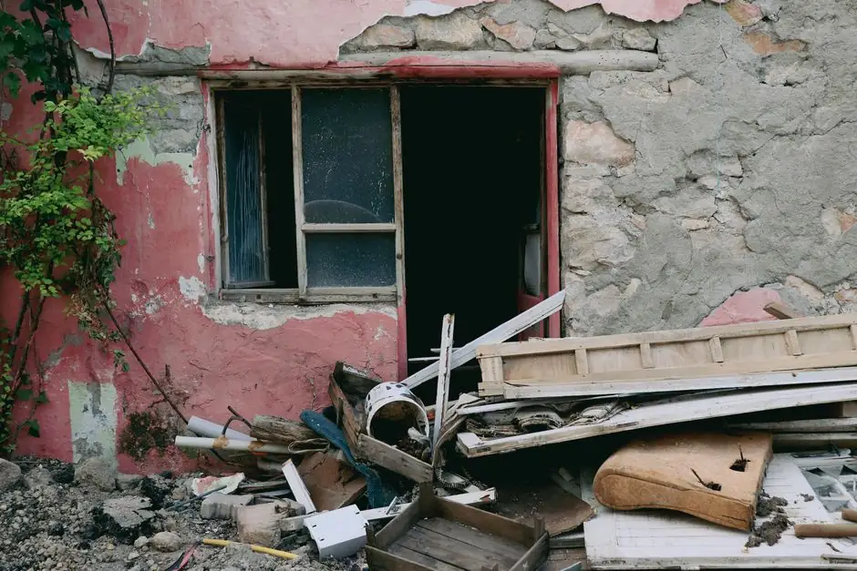

Water Extraction
Using powerful pumps, we remove all standing water to prevent further damage.
Water Damage Restoration in Tampa, FL is crucial for homeowners dealing with flooding, storm surges, or plumbing leaks. Whether it's from heavy coastal rains or a burst pipe, our team provides affordable Flood Damage Restoration Tampa residents can trust to restore their properties quickly and effectively.

Water Damage Restoration in Tampa, FL involves a comprehensive process to remove water, dry affected areas, and restore your home to its pre-damage condition. This service is essential for mitigating damage from tropical storms, flash floods, or plumbing failures, ensuring that your property remains safe and structurally sound.
Local Tampa customers often need Water Damage Restoration services due to the region's subtropical climate, heavy summer rainfall, and high humidity. Ground floors, crawlspaces, and residential properties are particularly vulnerable, making prompt action critical to prevent mold growth and structural decay. Our affordable restoration solutions are designed to address Tampa's unique environmental challenges head-on.
Our Water Damage Restoration services include comprehensive assessments, water extraction, drying, cleaning, and repairs. We ensure your home is fully restored to prevent future issues.
Using powerful pumps, we remove all standing water to prevent further damage.
Industrial dehumidifiers are used to ensure all moisture is eliminated from affected areas.
We inspect and treat areas susceptible to mold growth to ensure a safe environment.
We repair or replace damaged materials, ensuring your home looks as good as new.
Our team conducts a thorough assessment of the water damage. This includes identifying the source of water intrusion and evaluating the extent of the damage, typically taking 1-2 hours.
Using powerful water extraction pumps, we remove standing water from your property. This step is crucial to minimize damage and usually takes 2-4 hours, depending on the extent of the flooding.
We utilize industrial dehumidifiers and moisture meters to ensure all affected areas are properly dried. This process can take 3-5 days, depending on humidity levels and the materials involved.
All affected materials, including drywall and insulation, are cleaned and sanitized to remove contaminants. This step is vital for preventing mold growth and typically takes 1-2 days.
The final step involves restoring your home to its original condition. This may include replacing damaged materials like carpet padding or wood flooring, taking an additional 1-2 weeks.

Our team conducts a thorough assessment of the water damage. This includes identifying the source of water intrusion and evaluating the extent of the damage, typically taking 1-2 hours.
Used to detect moisture levels in walls and materials, ensuring thorough drying.
Powerful pumps remove standing water quickly to minimize damage.
Removes excess moisture from the air, preventing mold growth and ensuring effective drying.
Identifies hidden moisture pockets in walls and ceilings for comprehensive assessment.

A homeowner's ground floor flooded after a storm, leading to standing water and potential mold growth.
After: After our team extracted water and dried the area, the property was restored, and mold was prevented, allowing the family to use their space again.
Book this service →A burst pipe caused significant water damage to the kitchen, affecting cabinets and flooring.
After: Following restoration, the kitchen was fully repaired, with new flooring and cabinets installed, returning it to its original state.
Book this service →Water from a leaky roof damaged the interior walls and ceiling, risking structural integrity.
After: After repairs and restoration, the interior was restored, and a new roof was installed, ensuring safety.
Book this service →Water Damage Restoration addresses several critical issues that arise from water intrusion.
Ask a pro →Our team conducts thorough mold remediation as part of the restoration process, ensuring a safe living environment.
We assess structural integrity and provide necessary repairs to maintain safety and value.
Our experts identify and fix leaks, preventing further damage and costly repairs.
$180 - $1,500 depending on scope
Water Damage Restoration costs can vary based on the extent of damage, materials affected, and urgency. Typical pricing in 2026 ranges from $180 to $450 for minor damage, while extensive restoration can exceed $1,500. Factors such as the size of the affected area and materials involved can influence the final cost.
Investing in professional Water Damage Restoration ensures your home is safe and structurally sound, preventing further issues and costs down the line.
More extensive damage requires more resources and time, increasing overall costs.
Get a quote ↗Certain materials, like hardwood floors or drywall, may require more expensive replacement.
Get a quote ↗Emergency services often incur higher costs due to the need for immediate action and resources.
Get a quote ↗“After a tropical storm, our ground floor flooded. Basement Dry Pros responded quickly and had everything dried out in just a few days. Highly recommend!”
Sarah T.Homeowner, Tampa
✓ Verified“Their team was professional and thorough. They restored my commercial property in Downtown Tampa after a major water leak and kept me informed throughout the process.”
Mark L.Property Manager, Downtown Tampa
✓ Verified“I was impressed with their quick response and quality work in South Tampa. They handled the water damage from our broken pipe efficiently and effectively.”
Lisa R.Homeowner, South Tampa
✓ VerifiedWater damage restoration typically takes 3 to 7 days in Tampa, depending on coastal humidity, water intrusion levels, and the drying equipment required.
Water damage restoration services in Tampa include rapid water extraction, structural drying and dehumidification, antimicrobial sanitization, and full repairs to restore your property.
Choose certified, licensed, and insured restoration contractors with local Tampa experience, 24/7 emergency response, transparent pricing, and strong local customer reviews.
Immediately shut off your main water valve or secure electrical safety, take photos for insurance documentation, and call our 24/7 Tampa emergency response team at 317 216355928.
Contact us today for immediate assistance with your water damage needs. Our certified team is ready to help you restore your home.
Get a Free Estimate 317 216355928 →Reach out to us for quick and reliable water damage restoration services in Tampa, FL. We are available 24/7 to assist you with your needs.